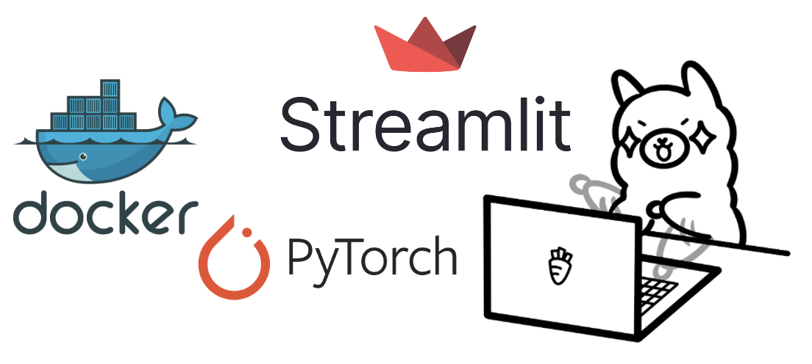
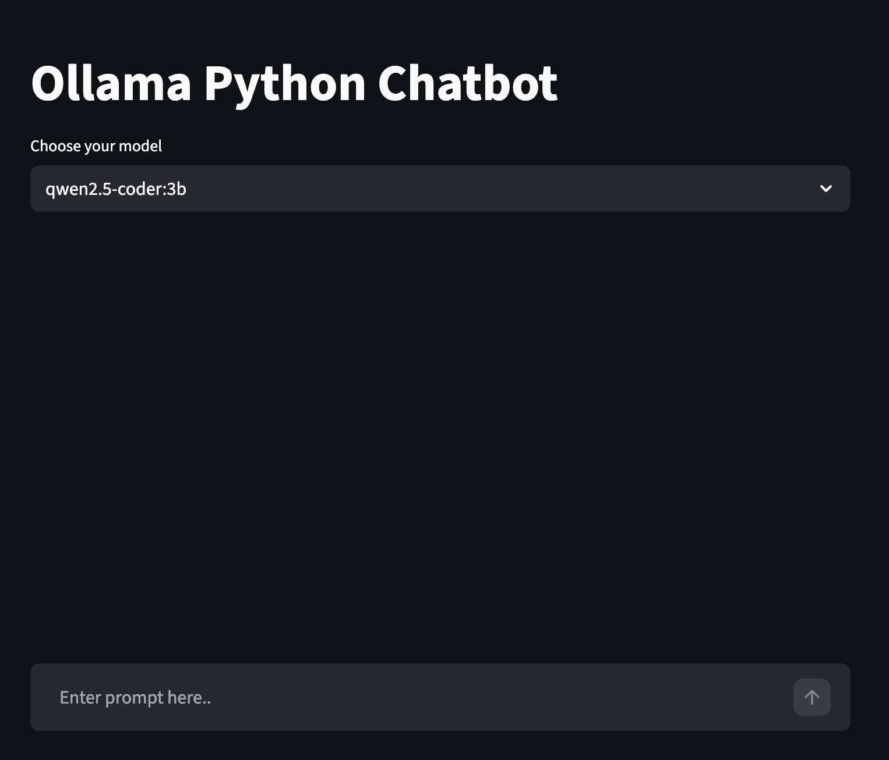
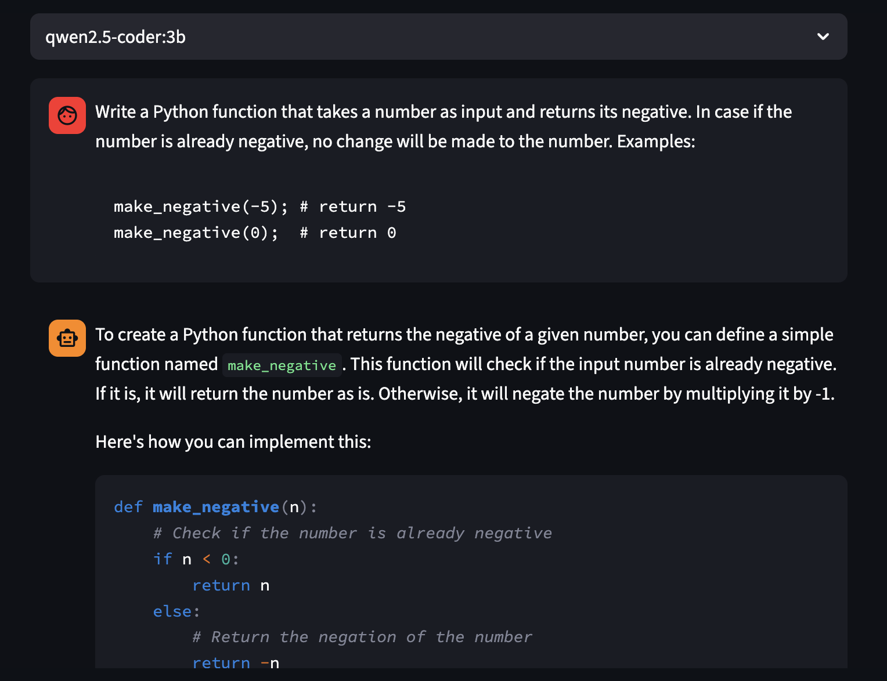

Local coding assistant: From conception to deployment
In this project, I wanted to try out building a local coding assistant using Streamlit, Pytorch and Ollama. The assistant can answer coding questions and provide code snippets based on the user's input. The app is designed to be a helpful tool for developers who want quick answers to their coding questions all the while keeping their code local and private.
Overview
In my workplace we recently had a meeting where we have discussed AI best practices: when to use AI, how to use it in a most environmentally friendly way, what can be a simple automation and what should be left entirely to human creativity, etc. We are currently preparing a sort of Cheatsheet on the topic. However one conversation that kept popping up (and which was almost completely off-topic by the way) was local LLMs and how to leverage one such system as a coding assistant.
It prompted me to brainstorm on the subject a bit more in depth. It is true that having a local/private LLM for coding questions can be useful. If the only task that the LLM is supposed to do is code, it doesn't need to be too large, doesn't need to generate images, music or crush fiction writing benchmarks. Therefore a small local model specifically specialiazed on code generation can do a good enough job that would unburden a developer quite well. Especially that when working with code that can later be propietary it is best practice to not expose it to third party LLM providers.
For using local LLMs to assist on code, many solutions exist already. For example you can use Claude-code with Ollama (instead of a remote model from Anthropic) and benefit from the agents, skills, etc. with local LLMs. There is also continue which allows you to create your own coding assistant directly inside Visual Studio Code and JetBrains with open-source LLMs from Ollama. But I wanted to see if I could make a 100% home-maid assistant using Streamlit myself
While researching for this project I came accross Continue which allows you to create your own coding assistant directly inside Visual Studio Code and JetBrains with open-source LLMs from Ollama. It is where I took and modified this image.
My plan is to start small and complicate as I go. In this first part I want to show you a simple local chatbot application. This is more of a proof of concept especially for deployment. Therefore I made a small user interface with Streamlit that can call a model served by Ollama and allow the user to ask questions and read the answers as a first step.
Key Features
Here is what the application does:
- Feature one: The user can select the LLM they want to use for the application from a drop down menu. The list of available models is fetched from Ollama. In the Docker image I have only pulled one model but if you use the app locally you can pull more models.
- Feature two: The app uses GPU if available but defaults to CPU if there is no GPU available.
- Feature three: A session state allows to display chat messages from history on app rerun
Technical Implementation
The application is built using Streamlit for the user interface, Pytorch for handling the model's computations, and Ollama for serving the local LLM. For this first proof of concept i have used the qwen2.5-coder:3b model. Because it is small but performant enough to test whether if everything works as they should. The main components of the implementation include:
models = [model.model for model in ollama.list()["models"]]
st.session_state["model"] = st.selectbox("Choose your model", models)
def model_res_generator():
if torch.cuda.is_available():
# Set the global PyTorch device to GPU
device = torch.device("cuda")
#torch.set_default_tensor_type("torch.cuda.FloatTensor")
else:
# Use CPU if no GPU available
device = torch.device("cpu")
stream = ollama.chat(
model=st.session_state["model"],
messages=st.session_state["messages"],
stream=True,
)
for chunk in stream:
yield chunk["message"]["content"]
You can find the complete implementation in the GitHub repository.
for message in st.session_state["messages"]:
with st.chat_message(message["role"]):
st.markdown(message["content"])
The code above shows how to handle the session state in Streamlit. You can find the complete implementation in the GitHub repository.
Screenshot from the app. The user has selected an LLM and the app prompts the user to ask a question
The user has asked a (very simple) coding question and the LLM returns an answer.
My first (and unsuccessful) attempt to Dockerize the app was to simply install Ollama, pull the model, sleep a bit and run the Streamlit app.
RUN ollama serve & sleep 5 && ollama pull qwen2.5-coder:3b && pkill ollama
COPY . .
EXPOSE 8501
CMD ["sh", "-c", "ollama serve & streamlit run llm_app.py --server.port 8501 --server.address 0.0.0.0"]
Simply invoking the curl command to install Ollama did not work. I had to extract Ollama with zstd as well. I figured this out following the very self-explanatory error message at docker build step.
The problem with this approach was that the Ollama pull step in the build was very slow and it made the image very large. In order to have a smaller image and a faster build, I ended up removing the pull from the Dockerfile altogether and pull the model at container startup instead.
#!/bin/sh
set -eu
MODEL="${OLLAMA_MODEL:-qwen2.5-coder:3b}"
PORT="${PORT:-8501}"
echo "Starting Ollama..."
ollama serve >/tmp/ollama.log 2>&1 &
OLLAMA_PID="$!"
cleanup() {
# Best-effort shutdown
if kill -0 "$OLLAMA_PID" >/dev/null 2>&1; then
kill "$OLLAMA_PID" >/dev/null 2>&1 || true
fi
}
trap cleanup INT TERM EXIT
echo "Waiting for Ollama to be ready..."
i=0
while ! ollama list >/dev/null 2>&1; do
i=$((i + 1))
if [ "$i" -ge 30 ]; then
echo "Ollama did not become ready in time. Last log lines:"
tail -n 50 /tmp/ollama.log || true
exit 1
fi
sleep 1
done
if ! ollama show "$MODEL" >/dev/null 2>&1; then
echo "Pulling model: $MODEL"
ollama pull "$MODEL"
else
echo "Model already present: $MODEL"
fi
echo "Starting Streamlit on port $PORT..."
streamlit run llm_app.py --server.port "$PORT" --server.address 0.0.0.0
Above is the entrypoint script that pulls the model at container startup. The idea here is to avoid the model pull at building step which makes it take too long. The idea here is to have the Dockerfile call this script with CMD ["/app/entrypoint.sh"] and the script will start the Ollama service, wait for it to be ready, pull the model if it is not already present and then start the Streamlit app. You can find the complete implementation of the entrypoint script in the GitHub repository.
Below is the Dockerfile that I ended up with.
# Use an official Python image as a base
FROM python:3.10
# Set working directory
WORKDIR /app
# System deps (curl for Ollama install, zstd for Ollama extraction)
RUN apt-get update \
&& apt-get install -y --no-install-recommends curl ca-certificates zstd \
&& rm -rf /var/lib/apt/lists/*
# Install dependencies
COPY requirements.txt .
RUN pip install --no-cache-dir -r requirements.txt
# Install Ollama
RUN curl -fsSL https://ollama.com/install.sh | sh
# Copy the app code
COPY . .
# Entrypoint script (pull model at container startup)
RUN chmod +x /app/entrypoint.sh
# Expose the Streamlit default port
EXPOSE 8501
# Start Ollama, pull a model if needed, then run the Streamlit app
CMD ["/app/entrypoint.sh"]
The final Dockerfile. The Docker image is based on the official Python image, installs system dependencies (curl and zstd), installs Python dependencies from requirements.txt, installs Ollama, copies the app code and entrypoint script, and sets the entrypoint to run the script that starts Ollama, pulls the model if needed, and runs the Streamlit app.
The resulting Docker image is 5.7GB of size. But here I am cheating a bit since I have only pulled a single and quite lightweight model (qwen coder 2.5) in the Docker image. I let you guess what happens if you pull gpt-oss:20b.
Technologies Used
The project was built using the following technologies:
- Python 3.11 - Core programming language
- Docker - Containerization
- Pytorch - Deep learning framework
- Ollama - LLM model provider
- qwen coder 2.5 - Open source LLM
Future Improvements
Potential enhancements for future versions:
- My final goal is to create a fully-featured local AI coding assistant Continue or Claude code. Of course it won't be neither performant nor as smart as the cutting edge foundation models (I'll stick to the lightweight Qwen 2.5). But the endeavor will be a challenging learning journey.
- The most challenging part of this project was the deployment on Docker. I had already created and deployed Streamlit apps on Docker before but the expernal dependency on Ollama complicated the process a bit. I should figure out if there are more straight forward ways to do so.
Conclusion
This project demonstrates the feasibility of creating a local coding assistant using Streamlit, Pytorch, and Ollama. The application allows users to interact with a local LLM to get coding assistance while keeping their data private. Future improvements will focus on enhancing the assistant's capabilities and user experience.